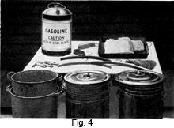
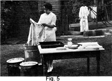

1931 - Laundering and Dry Cleaning
Woman's Institute of Domestic Arts & Sciences,
by Mary Brooks Picken
Equipment for Dry Cleaning
45. In cleaning establishments, the simplest tools and the simplest recipes are universally used. The same simplicity should be observed in cleaning that is done in the home, both in the equipment and the method of procedure. The equipment shown in Fig. 4 includes all that is required for dry cleaning at home. As this illustration shows, practically all of this equipment is found in the average home.
There need be no hesitancy in using the kettles and jars that are in every woman's kitchen if, when the work is complete, they are scoured thoroughly and allowed to air so that the odor entirely disappears.
46. One of the secrets of successful home cleaning is to have all working materials ready, because gasoline, or any other cleaning fluid, evaporates rapidly and the process should not be delayed after it is once started. The articles that should be made ready are both listed and described.
- 3 or 4 vessels with tight-fitting lids
- A large flat pan or a shallow sink
- Table and chairs
- Clothes hangers
- Clothes-pins
- Clothes-brushes or whisk-brooms
- Bath towels
- Cleaning fluid for bath
- Dry-cleaning soap
- Spotting reagents
47. Vessels with well-fitting lids are almost indispensable for home dry cleaning, as the lids prevent evaporation. The vessels should also be large enough to allow for the handling of the stuffs to be cleaned. They may be medium-size dish pans with large, tin covers made close-fitting by placing weights on top. Or, if considerable cleaning is to be done, large aluminum vessels or large stone pots, such as are used in the chemical industry, would be excellent. If there are only a few light articles to be cleaned, 2 or 3 half-gallon fruit jars will answer.
48. For spotting purposes, provide a large, flat pan of the dripper type. Or, if much cleaning is to be done, have a table with side pieces that extend above the level of the top. This forms a shallow sink when lined with zinc or tin. A hole may be bored in one corner, and a pipe connected to carry off the surplus cleaner.
49. A table and two chairs, or still better, two tables, will provide space for sorting the various garments and for working.
50. Clothes hangers and clothes-pins are generally required for drying purposes.
51. Clothes-brushes or whisk-brooms found in every home, if thoroughly cleaned, are quite satisfactory. If brushes must be purchased, fine whisk-brooms and brushes with unpainted backs are best. A small, soft brush is particularly desirable for scrubbing fabrics. Wire brushes should be avoided.
52. Bath towels are needed for drying the garments. These may be washed afterwards and need not be injured in any way by this work.
53. The cleaning fluid, of whatever nature, should be provided in sufficient quantity, depending on the articles to be cleaned, usually 3 to 6 gallons. Remember that this, after being used, may be strained and used again for washing dark fabrics. Unless treated by a special process to make it entirely clean, however, this strained cleanser should not be used for cleaning white or light-colored garments.
Heated cleanser is a great help, the garments being cleaned more easily in it than in a cold one. To heat the cleanser, put the vessel containing it into a larger vessel containing a few inches of boiling water, as shown in Fig. 5. Never attempt to heat a cleaning fluid by putting it near a fire or a flame, because of the danger.
54. The soap for dry cleaning must be carefully chosen. A soap made especially to use with cleansers may be purchased, but considerable time is required to make it ready, and it is generally used only in dry-cleaning establishments. Putnam Dry Cleaner is very satisfactory, however, for home cleaning and is obtainable in almost all drug stores. In using Putnam Dry Cleaner or anything similar, put it into the cleanser that is used for the first washing.